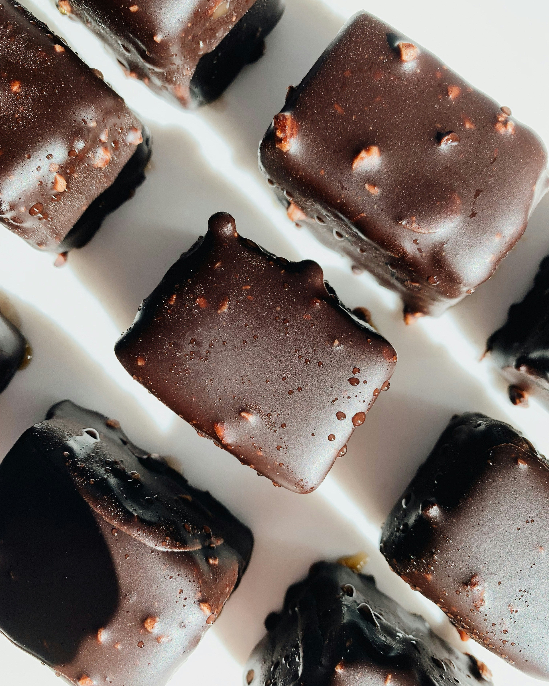
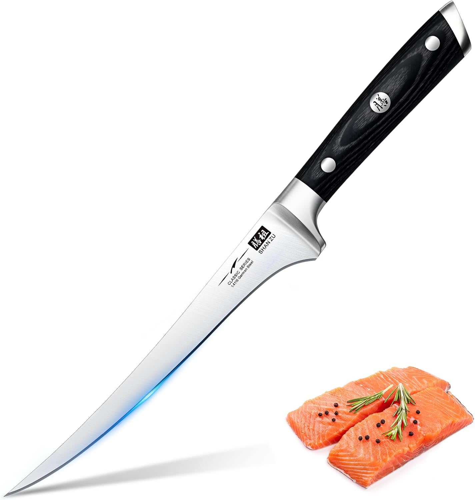
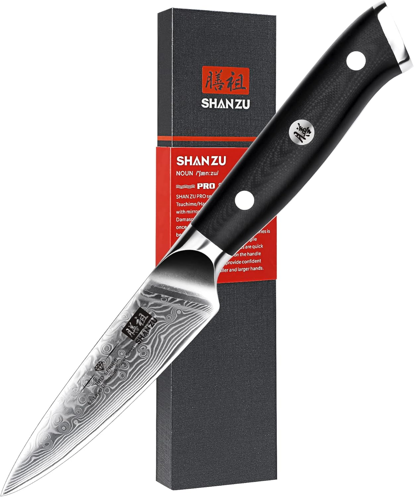
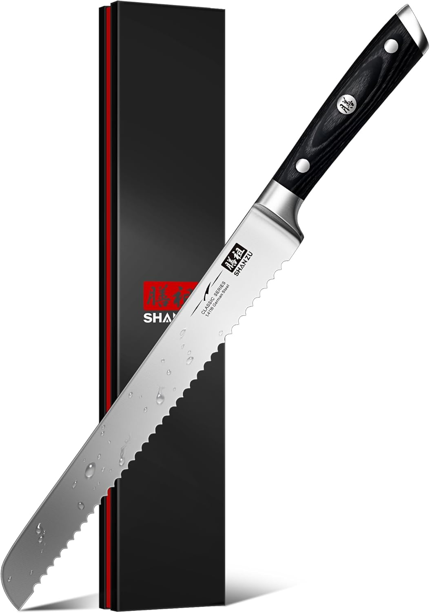

| SHAN ZU |
|---|
| $$ 293.277 COP |
Creado para Deleitar
Lo Mejor de Nuestro Recetario
Entrada:Bruschetta de Tomate y Albahaca

Ingredientes:
Instrucciones: |
Fuerte: Pollo Al Limón

Ingredientes:
Instrucciones: |
Guarnicion: Puré de Papas

Ingredientes:
Instrucciones: |
Postre: Brownies de Chocolate

Ingredientes:
Instrucciones: |
|---|

|

|

|

|
|---|
Bienvenidos a Git Food
En [Nombre de tu Página], creemos que la cocina es más que solo preparar alimentos; es una forma de expresar amor, creatividad y tradición. Nuestra misión es reunir a amantes de la cocina de todas partes, ofreciendo una plataforma donde puedan descubrir, compartir y disfrutar de recetas deliciosas y accesibles.
Nuestra Historia
Todo comenzó como un pequeño proyecto en la cocina de nuestra casa, donde la pasión por la gastronomía se transformó en una aventura culinaria. Con el tiempo, nos dimos cuenta de que había una gran comunidad de personas que, como nosotros, buscaban inspiración para sus comidas diarias y ocasiones especiales. Así nació [Nombre de tu Página], un espacio dedicado a la recopilación de recetas que abarcan desde entradas encantadoras hasta postres decadentes.
Lo Que Ofrecemos
- Recetas Variadas: Ya seas un principiante o un chef experimentado, aquí encontrarás una amplia gama de recetas que se adaptan a todos los niveles de habilidad y preferencias dietéticas. Desde platos vegetarianos hasta opciones con carne, hay algo para cada gusto.
- Consejos y Trucos: Creemos que cocinar debe ser una experiencia divertida y sin estrés. Por eso, compartimos consejos útiles, técnicas de cocina y trucos que facilitarán tu tiempo en la cocina.
- Comunidad: Nos esforzamos por construir una comunidad donde los amantes de la cocina puedan compartir sus experiencias, recetas y consejos. Te invitamos a participar, dejar comentarios y compartir tus propias creaciones.